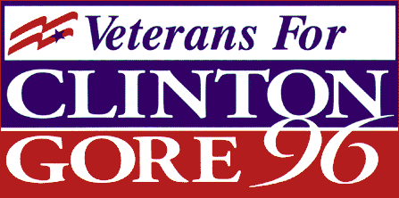

ere are some bumper stickers you can download to show off your support for the Clinton/Gore’96 campaign. To save them to your hard drive, right-click them from Windows or click and hold on them from a Macintosh. Please also let us know about any Clinton/Gore’96 artwork you create yourself in our America’s Home Page section.
